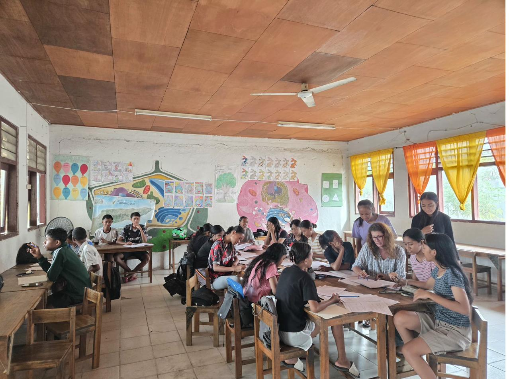

✦ Notícias e Eventos
O que acontece no CAFE

Destaque Internacional
Programa de Educação Olímpica do COP chega ao CAFE de Liquiçá
O CAFE de Liquiçá integra o Programa de Educação Olímpica do Comité Olímpico de Portugal, promovendo os valores de Excelência, Amizade e Respeito junto dos seus alunos.
Abril 2026
🔗 Ler notícia completa →Comunidade
CAFE celebra a Missa de Páscoa 2026
Alunos, funcionárias e professoras do CAFE participaram na Missa de Páscoa, num momento de espiritualidade, união e celebração da comunidade escolar.
Abril 2026
Parceria Internacional
One Health Leaders Program no CAFE
O CAFE recebeu o programa One Health Leaders, uma iniciativa que une saúde humana, animal e ambiental, em parceria com a Embaixada dos EUA em Timor-Leste.
Março 2026
Pedagogia
Dia do Pi · 9.º ano descobre o SuperTmatik
No Dia do Pi (14 de março), os alunos do 9.º ano participaram numa sessão especial de aprendizagem das regras do SuperTmatik — un jogo que une raciocínio matemático e competição de forma lúdica e pedagógica.
Março 2026

Pedagogia
Aulas de apoio para consolidação de conhecimentos
O CAFE reforça o seu compromisso pedagógico com aulas de apoio dedicadas à consolidação de conhecimentos, garantindo que nenhum aluno fica para trás.
Fevereiro 2026
Tradição
Hastear da Bandeira — ritual de cidadania
Na primeira segunda-feira de cada mês, toda a comunidade do CAFE reúne-se no pátio para o hastear da bandeira — um momento solene de civismo, identidade e orgulho timorense.
Mensal
Celebração
Dia da Mulher — mensagens do coração
Os alunos do CAFE celebraram o Dia Internacional da Mulher com mensagens escritas à mão em corações — palavras de força, admiração e carinho para todas as mulheres da comunidade.
Março 2026
Vídeo
Visita de estudo ao Caltech
Alunos do CAFE de Liquiçá em visita de estudo ao Caltech — um momento de inspiração e descoberta científica para os nossos jovens.
24 de Março de 2026